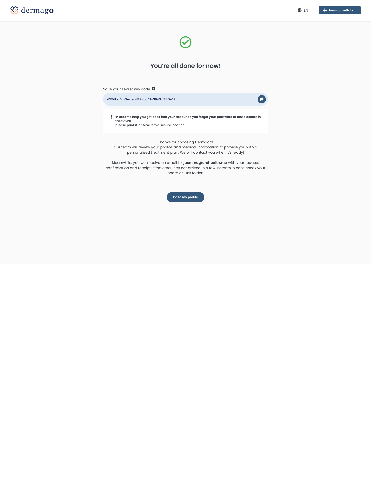
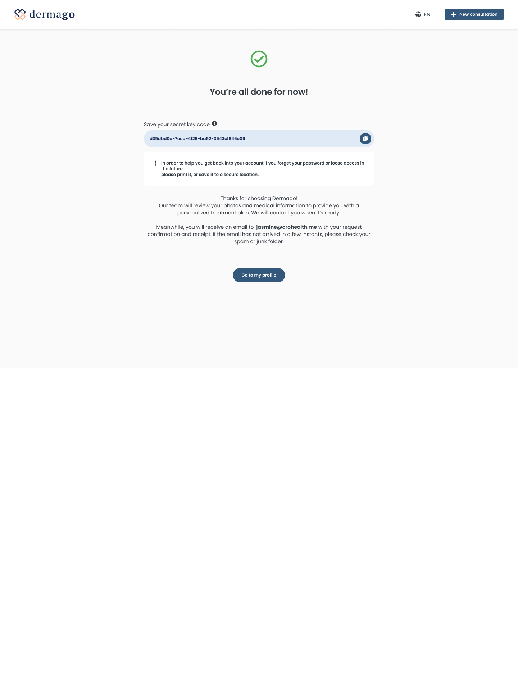

Dermago
How I Tackled and Designed UX Solutions
for a Smarter, Faster Dermatology Consultation App
Efficiency in healthcare isn’t just about diagnoses or treatments—it’s about creating smooth, reassuring experiences between patients and doctors. Through structured research and design thinking, this case study demonstrates how I approached the problem and delivered UX solutions that reduce cognitive load and enable smarter, faster consultations for everyone involved.
Key outcomes
- Boosted Clinical Efficiency: Streamlined asynchronous workflows reduced doctors’ time on repetitive diagnosis tasks.
- Better Continuity of Care: Enhanced follow-up consultation features with skin progression visualization empowered doctors to make more informed decisions, improving treatment effectiveness.
- Elevated Patient Experience: Simplified and faster patient interactions led to higher satisfaction and reduced drop-off rates in digital care journeys.
- Scalable UX Framework: Designed a flexible system that supports both doctors and patients, laying groundwork for future feature expansion and adoption.
Table Of Content
- Introduction
- Process
- Phase 0. Discovery project
- Phase 1. Ideation
- Phase 2. Design
- Phase 3. Test, Iteration
- Results
- Key learnings
Introduction
Context
In 2021, to address the challenges of in-person medical visits during the pandemic, two dermatologists from ORO Inc. developed an asynchronous telemedicine app.
This flexible, chat-based approach eliminated the need for real-time interaction, making it ideal for dermatology and aesthetic care.
Dermago, the first client, successfully adopted the app across four Canadian provinces to streamline remote consultations.
App's concept
The app allowed patients to submit photos and medical info at their convenience,
while doctors reviewed cases and responded with diagnoses and treatment plans later.
Highlighted Features in this case study
- Patient Onboarding – A crucial step in the patient’s journey, ensuring a seamless and engaging start to their experience.
- Doctor's Diagnosis and Treatment (DxTx) – Demonstrating how doctors manage consultation cases efficiently within the app.
My responsibility
- My role: Product design . User research . User testing
- Product team: 1 CTO . 1 Product Owner . 5 Back-ends . 1 Front-end . 1 Designer (me)
- Stakeholders: Nurses . Medical doctors . Product & Marketing . Clients
- Timeline: 2021 / 2022
Phase 0. Discovery project
- User Behavior in Digital Healthcare - Patients often prefer minimal interaction in health app, especially during the initial stages.
- Complexity of Dermatological Care - Asking for too much information upfront can frustrate users who might not yet understand why it is necessary.
- Engagement Patterns - If onboarding is not designed to be quick and relevant, users are less likely to engage with the app’s core functions, such as submitting their first consultation request.
- Personalization Trends - Personalization has proven to be a key factor in increasing user satisfaction and engagement, especially in healthcare.
- Asynchronous Care - Clear communication and patient education were critical to success.
- Business Priorities vs. User Needs
Deliver a tool that reduces clinician time per case without compromising care quality. Increase patient retention by offering fast, convenient, and trusted care. - Pain Points in Current Workflow
Doctors are frequently asked the same concern multiple times, with patients seeking clarification or reassurance. This results in a time-consuming back-and-forth that strains efficiency. Patients experience delays in receiving diagnoses, especially when clarification or follow-up is required. - Opportunities for Improvement (UX + Process)
Smarter intake with condition-specific logic and guided photo capture. Structured clinical templates for common dermatologic diagnoses. - Clinical & Technical Requirements
Mobile first design and web accessibility support.
Competitive analysis on digital healthcare
Purpose: To identify industry trends, UX patterns, and product opportunities by analyzing leading telehealth platforms.
Objective: This analysis aims to explore the user experience, feature set, and positioning of key telehealth apps to inform product direction, improve competitiveness, and uncover opportunities in patient-provider digital interactions.
| Competitors Analyzed | ||
|---|---|---|
| App name | Type | Description |
| GetMaple | Indirect Competitor | On-demand virtual care for Canadian users |
| Babylon Health | Indirect Competitor | AI-driven symptom checker + GP consultations |
| TiaHealth | Goverment App | Canadian Online Doctor Appointments |
| Teladoc Health | Aspirational | Multinational telemedicine and virtual healthcare |
| Feature Comparison | ||||
|---|---|---|---|---|
| Feature | GetMaple | Babylon Health | TiaHealth | Teladoc Health |
| On-demand visits | ||||
| Appointment scheduling | ||||
| AI symptom checker | ||||
| Prescription delivery | ||||
| Insurance integration | ||||
| Web & mobile experience |
| UX & UI Observations | ||
|---|---|---|
| App | Strengths | Weaknesses |
| GetMaple | Clean, minimal UI; easy access to specialist care | Lack of AI-driven assistance |
| Babylon Health | Cutting-edge design; intuitive AI triage; personalized content | Onboarding can feel data-heavy and clinical |
| TiaHealth | Quick booking flow; family-friendly experience; good price transparency | Lacks visual polish; less refined mobile experience |
| Teladoc Health | Reliable and fast; trusted brand; good appointment management UX | UI feels outdated in places; limited proactive care features |
User research
User survey
Participants: 100 users, aged 22–65
Objective: To determine how much users familiar to the telehealth / asynchronous concept.
User interview
Participants: 10 users, aged 22–65
Objective: To understand user expectations, preferences, pain points, and trust factors related to onboarding to an asynchronous digital healthcare.

Findings
Stakeholder interviews
Business / Strategy
Participants: CEO, Product Owner, Marketing specialist
Objective: To understand business model, success metrics, user acquisition.
Clinical / Medical
Participants: Dermatologists, Nurses
Objective: To understand workflow, diagnostic needs, patients needs.
Technical / Product
Participants: CTO, Backend developers, Frontend developer.
Objective: To understand limitations, opportunities, and platform capability.
Findings
Outcomes
Doctors need an efficient, asynchronous tool that enables them to review, diagnose, and treat patient cases at flexible times that align with their busy and unpredictable schedules. Meanwhile, Patients need a frictionless way to access care, especially for non-urgent conditions. Long intake forms, unclear steps, and delayed responses often lead to frustration, mistrust, or abandonment before completing the process.
Phase 1. Ideation
User Group 1- Patients
User story
As a patient, Marie, a young, tech-savvy office staff, needs a way to get a quick and accurate diagnosis remotely because traditional in-person consultations often involve long wait times and unnesscary visit for conditions that could be resolved through photos and messaging.
- New walthrough screens
- Make the consultation types more standout
- Move sign-up step toward the end of the process
- Keep design flexible for feature added later on: Follow-up Consultation
How Might We
How might we make the onboarding process seamless and intuitive to reduce friction for first-time users so they will engage with the app deeper and longer?
Brainstorm using card sorting
I began by mapping out the user journey through a user story and user flow diagram. This approach helped translate insights into actionable solutions and provided a clear, understandable document for discussion with stakeholders.
Define user onboarding flow
Validate design concept

Results - a roadmap of UX improvements including:
User Group 2- Doctors
User story
As a doctor, Emilie, an experienced medical doctor, needs a way to manage and respond to non-urgent cases efficiently because repetitive follow-up questions and real-time appointments consume valuable time and reduce their ability to treat more complex cases.
How Might We
How might we support dermatologists in efficiently handling their caseload and delivering consistent diagnoses, treatment plans at their convenience by reducing repetitive tasks?
Doctors' interviews
Participants: 2 dermatologists from Dermago clinic. Each with 8-15 years of clinical experience, seeing both new and returning patients.
Objective:
- Understand doctors' current workflows
- Identify pain points in managing cases
- Gather insights into how digital tools could support their job
Outcomes

Phase 2. Design
Patient onboarding flow
Design challenge 1 - Educate users about what's the app offers to reduce cognitive load
Problem
Users who are unfamiliar with asynchronous healthcare apps often feel uncertain about the app’s full capabilities. Without proper guidance or an introduction to key features, user may feel overwhelmed or miss out on valuable services, leading to lower engagement and even abandonment.
Solution
To address this, I designed a guided walkthrough that introduces new users to the app’s core features during the onboarding process. This walkthrough aimed to educate users upfront about what the app offers before they began exploring it independently. The walkthrough included a brief, straight toward overview of the app’s main services, such as how to submit skin consultation, receive expert advice, and manage follow-up consultations. By simplifying the explanation with visual and description, I reduced confusion and built confidence in the process.
Design challenge 2 - Allow user select the appropriate Consultation Type
Problem
Users needed to choose whether the consultation was for themselves, their child, or someone in their care. The app had to handle these different scenarios smoothly without confusing users.
Solution
I designed a decision-making interface early in the onboarding process where users could easily select the type of consultation they needed. Each option was accompanied by clear, concise descriptions and visual cues (icons and short text) to ensure that users could make an informed choice. The onboarding flow dynamically adjusted based on the user’s choice, offering tailored questions and information for each case.
Design challenge 3 - Making the process user friendly
Problem
Digital healthcare onboarding require detailed medical information, but asking for too much detail upfront can overwhelm users.
Solution
Display essential information once at a time. Grouping them into relevant categories at each step to reduce users' cognitive load.

Design challenge 4 - Allow users go through onboarding without Sign-Up Interruption
Problem
Many users become frustrated when healthcare apps force them to sign in or create an account before they can explore the app, or understand its value. This often leads to drop-offs during the onboarding process.
Solution
I designed the onboarding flow to defer sign-in until the end of the process. Users could go through the consultation selection, answer medical questionnaire and treatment preference, and get a feel for the app’s functionality before being prompted to sign in or create an account. By delaying the sign-in request until the user was ready to submit their first consultation, it reduced friction and allowed users to engage with the app more freely. This approach built trust and helped users understand the app’s value before committing to registration.

Doctor working flow
Design challenge 1 - Helping doctors manage consultation requests effectively
Problem
Doctors were overwhelmed by the volume of consultation requests and wishes a structured way to quickly assess, sort, or prioritize them. The importance of an intuitive listing made it easier to track the progress systematically.
Solution
I designed a Consotation Grid View - a centralized hub where all incoming and ongoing cases are presented at a glance. Each request item highlights essential information upfront like: Patient name & age, Time since submission, Case urgency, Type of issue, Status.
Plus, applying visual clue like icons to reduce the cognitive load. Also, doctors can filter, search, and sort to focus on priority cases.
This solution improved case triaging, and saved time navigating through patient queues.
Design challenge 2 - Enabling doctors to diagnose and provide treatments efficiently
Problem
Providing diagnoses and treatment plans for common skin conditions is often a straightforward task—but it is also time-consuming and highly repetitive. By enabling doctors with a streamlined and efficient way to handle these cases, we can significantly reduce cognitive load and manual effort, increase productivity, and ultimately make their day-to-day workflow more manageable and satisfying.
Solution
To address this, I designed a focused consultation workspace where doctors can efficiently process a case without context switching.
Design challenge 3 - Ensuring continuity of care in Follow-up Consultations for better long-term care
Problem
Providing doctors with a streamlined way to manage follow-up consultations improves efficiency and continuity of care. Currently, doctors may need to revisit past records manually or rely on nurses to retrieve previous patient information—adding friction to the process. Without clear access to consultation history, important context may be lost, impacting the quality of care and consistency of treatment plans.
Solution
I designed a Consultation History feature within each case, then doctors could use this historical insight to make more informed follow-up decisions and tailor future treatment plans based on observed progress.
Phase 3. Test, Iteration
Patients' experience test
Objectives
To identify usability issues that affect ease of use, clarity, and overall satisfaction for patients on how they:
- Submit consultation requests efficiently and confidently
- Communicate symptoms and concerns clearly through photos and messaging
Methodology
Participants: 10 first-time users
Method: Remote moderated test using a clickable prototype (Figma)
Task assigned:
- Start a new consultation, describe symptoms, and upload photos of the skin issue
- Select the treatment plan, complete payment, and submit the consultation request
- Send messages to the doctor
Key findings and usability issues
1) Overwhelming Input Forms → Drop-Off Risk
Long and dense input forms caused users to feel overwhelmed early in the process. Some users hesitated or skipped optional questions, expressing that the effort felt “too much” before even submitting the consultation. This friction increases the risk of abandonment.
2) Poor Layout Clarity → Confusion and Navigation Struggles
A progress bar (top of screen on both mobile and desktop) contributed to visual clutter, making it harder for users to focus on the task. Additionally, the [Back] button placement—too far down the screen—was difficult to reach, especially on mobile, slowing task completion and increasing frustration.

Proposed solution
1) Simplify design layout to improve Visual Hierarchy and Readability
- Updated the color system to improved the contrast between text fields and background for better readability.
- Redesign the header section, particularly the progress indicator to help the layout got a minimal look.
2) Reduce Cognitive Load & Information Density by spliting content to multi-managable steps
- The forms contain a lot of input fields on a single screen. Breaking them down into smaller sections by adding more space in between might reduce overwhelm.
- Using progressive disclosure (showing additional fields only when relevant).
Doctors' experience test
Objectives
To identify usability issues that affect speed, clarity, and satisfaction for doctors on how:
- Efficient consultation triage and management
- Fast and confident diagnosis & treatment workflows
Methodology
Participants: 2 dermatologists
Method: Remote moderated test using a clickable prototype (Figma)
Task assigned:
- View and prioritize consultation requests
- Diagnose a case and submit a treatment plan
- Handle a follow-up case (review history and provide updated care)
Key findings and usability issues
1) Friction in Accessing Follow-Up Case History
During usability testing, both doctors experienced friction when trying to access prior information related to a follow-up consultation. The current flow separates the follow-up case from its previous instances. To retrieve past records, doctors had to: Open the current case -> Click into [View consultation history] -> Select and open the previous case's details. This multi-step process slowed them down.
2) The consultation history was plit into two tabs - Follow-ups vs. Others - which caused confusion
Doctors were unsure why the same patient's consultation records were divided and had difficulty define the relevant information in the current context.
3) Lack of Skin Progression context
Seeing only the current state skin photos was insufficient for understanding the treatment's effectiveness over time. Doctors wanted an overview of skin progression to assess whether the condition had improved, worsened, or remained unchanged.
Proposed solution
1) Expanded grid view with parent/child items allows doctors to access related sub-items directly within the context of the larger list, without navigating away. This approach also reduces the need to separate consultation history into two tabs, helping to minimize unnecessary information and keep the context more focused.
2) For follow-up usecase, add Skin Progression section to case's details, introduce a visual timeline and gallery of skin photos, showing all submissions in chronological order.
Results
- Mobile version
- Desktop version
(F5 to view clearer pictures when it's blur)
 

Outcomes
After implementing UX improvements based on initial user feedback, a second round of user testing was conducted with 5 users to validate the changes. Here are the key results:
- Completion Rate Increased by 22% – Breaking long forms into smaller chunks and streamlining inputs reduced drop-offs.
- Higher user satisfaction – Clearer UI, improved navigation, and better form structure resulted in 85% positive feedback.
- Increased confidence in submission – The summary step and confirmation message reassured 90% of users.
Key Learnings
- Stakeholder Collaboration is Foundational
Working closely with stakeholders from the beginning was crucial. Early alignment through interviews and requirement gathering helped surface real workflow challenges and business expectations—ensuring the design stayed grounded, strategic, and relevant throughout the process. - Design Thinking Brings Clarity to Complex Workflows
Applying a structured design thinking approach helped break down complex consultation workflows into actionable design challenges. By moving from insights to ideation, and through continuous testing, I was able to develop targeted solutions that streamlined both doctor and patient experiences. - Testing with Real Users is essential Usability testing with real doctors and patients uncovered critical friction points that weren’t obvious during design. These insights led to key design iterations—like simplified form structures and better follow-up management—that improved usability, efficiency, and satisfaction for both user groups.